Contents
- Class Definition
- Properties
- Methods
- Continuous dynamics
- Discrete dynamics
- Matrix A: State Jacobian in Discrete dynamics
- Matrix A: State Jacobian in Continuous dynamics
- Matrix B: State to Control Jacobian in Discrete dynamics
- Matrix G: State to noise Jacobian in Discrete dynamics
- Generating process noise
- Computing process noise covarinace
- Computing planned open-loop deterministic controls (or nominal controls) for unicycle model.
- Computing planned open-loop deterministic state trajectory (or nominal trajectory) for unicycle model.
- Generating Control-dependent and independent noises
- Generating Control-dependent Noise Covariance
- Generating deterministic open loop controls (nominal controls)
Class Definition
classdef MotionModel_class < handle
%============================== UNICYCLE MOTION MODEL ========================================= % Note that because the class is defined as a handle class, the % properties must be defined such that they are do not change from an % object to another one.
Properties
properties (Constant = true)
stDim = state.dim; % state dimension
ctDim = 2; % control vector dimension
wDim = 5; % Process noise (W) dimension % For the generality we also consider the additive noise on kinematics equation (3 dimension), but it most probably will set to zero. The main noise is a 2 dimensional noise which is added to the controls.
dt = user_data_class.par.motion_model_parameters.dt;
base_length = user_data_class.par.motion_model_parameters.base_length; % distance between robot's rear wheels.
sigma_b_u = user_data_class.par.motion_model_parameters.sigma_b_u_unicycle;
eta_u = user_data_class.par.motion_model_parameters.eta_u_unicycle;
P_Wg = user_data_class.par.motion_model_parameters.P_Wg;
end
Methods
methods (Static = true)
Continuous dynamics
function x_dot = f_contin(x,u,w) %#ok<STOUT,INUSD> % This is not needed yet in unicycle model. end
Discrete dynamics
![$$ x_k = x_{k-1}+ [V_k\cos\theta_k, V_k\sin\theta_k,
\omega_k]^T\delta t + [V^n_k\cos\theta_k, V^n_k\sin\theta_k,
\omega^n_k]^T\sqrt{\delta t} + W^g\sqrt{\delta t}$$](MotionModel_class_eq99819.png)
function x_next = f_discrete(x,u,w) if length(u) ~= 2, error('SFMP: In this unicycle model, the dimension of control has to be 2'), end Un = w(1:MotionModel_class.ctDim); % The size of Un may be different from ctDim in some other model. Wg = w(MotionModel_class.ctDim+1 : MotionModel_class.wDim); % The size of Wg may be different from stDim in some other model. c = cos(x(3)); s = sin(x(3)); d_t = MotionModel_class.dt; x_next = x + [u(1)*c ; u(1)*s ; u(2)]*d_t + [Un(1)*c ; Un(1)*s ; Un(2)]*sqrt(d_t) + Wg*sqrt(d_t); end
Matrix A: State Jacobian in Discrete dynamics
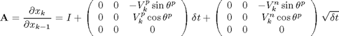
Note that in most cases, we assume that we do not have access to the exact value of noises. Thus, we input  , which is zero to compute the linearization matrices.
, which is zero to compute the linearization matrices.
function A = df_dx_func(x,u,w) if (length(u) ~= 2 || length(w) ~= 5), error('SFMP: In this unicycle model, the dimension of control has to be 2 and noise has to be 5'), end Un = w(1:MotionModel_class.ctDim); % The size of Un may be different from ctDim in some other model. % Wg = w(MotionModel_class.ctDim+1 : MotionModel_class.wDim); % % The size of Wg may be different from stDim in some other % model. In this Jacobian "Wg" does not appear. c = cos(x(3)); s = sin(x(3)); d_t = MotionModel_class.dt; A = eye(MotionModel_class.stDim) + [0 0 -u(1)*s; 0 0 u(1)*c; 0 0 0] * d_t + [0 0 -Un(1)*s; 0 0 Un(1)*c; 0 0 0] * sqrt(d_t); end
Matrix A: State Jacobian in Continuous dynamics
function Acontin = df_contin_dx(x,u,w) %#ok<STOUT,INUSD> % Not yet implemented. end
Matrix B: State to Control Jacobian in Discrete dynamics
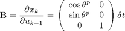
function B = df_du_func(x,u,w) %#ok<INUSD> th = x(3); B = [cos(th) , 0 ; sin(th) , 0 ; 0 , 1] * MotionModel_class.dt; end
Matrix G: State to noise Jacobian in Discrete dynamics
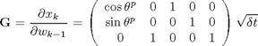
function G = df_dw_func(x,u,w) %#ok<INUSD> th=x(3); G = [cos(th) , 0 , 1 , 0 , 0 ; sin(th) , 0 , 0 ,1,0 ; 0 , 1 , 0 ,0,1] * sqrt(MotionModel_class.dt); end
Generating process noise
The whole process noise 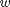 consists of control-dependent noise 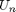 and control-independent noise 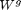.
function w = generate_process_noise(x,u) %#ok<INUSD> [Un,Wg] = generate_control_and_indep_process_noise(u); w = [Un;Wg]; end
Computing process noise covarinace
function Q_process_noise = process_noise_cov(x,u) %#ok<INUSD> P_Un = control_noise_covariance(u); Q_process_noise = blkdiag(P_Un,MotionModel_class.P_Wg); end
Computing planned open-loop deterministic controls (or nominal controls) for unicycle model.
function [up,kf] = compute_planned_control(x_initial,x_final) % "x_initial" and "x_final" are vectors that indicate the start % and final position of the state trajectory, we are planning % the control "up" for. [up,kf] = compute_planned_control_unicycle(x_initial,x_final); end
Computing planned open-loop deterministic state trajectory (or nominal trajectory) for unicycle model.
In computing the planned trajectory, system is assumed to be deterministic, so the noise is zero.
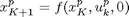
function x_p = compute_planned_traj(x_initial,u_p,kf) % noiselss motion x_p = zeros(state.dim,kf+1); x_p(:,1) = x_initial; for k = 1:kf x_p(:,k+1) = MotionModel_class.f_discrete(x_p(:,k),u_p(:,k),zeros(MotionModel_class.wDim,1)); end end
end
end
Undefined variable "state" or class "state.dim".
Generating Control-dependent and independent noises
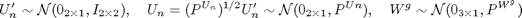
The reason we do not use "mvnrnd" to generate is the speed. The way we do here is much faster than using "mvnrnd".
function [Un,Wg] = generate_control_and_indep_process_noise(U) % generate Un indep_part_of_Un = randn(MotionModel_class.ctDim,1); P_Un = control_noise_covariance(U); Un = indep_part_of_Un.*diag(P_Un.^(1/2)); % generate Wg Wg = mvnrnd(zeros(MotionModel_class.stDim,1),MotionModel_class.P_Wg)'; end
Generating Control-dependent Noise Covariance
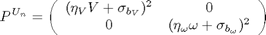,
where, 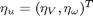 and 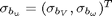.
function P_Un = control_noise_covariance(U) u_std=(MotionModel_class.eta_u).*U+(MotionModel_class.sigma_b_u); P_Un=diag(u_std.^2); end
Generating deterministic open loop controls (nominal controls)
I think this function should go out of this class maybe.
function [u_p,kf] = compute_planned_control_unicycle(X_initial,X_final) % inputs x_c=[X_initial(1),X_final(1)]; y_c=[X_initial(2),X_final(2)]; dt=user_data_class.par.motion_model_parameters.dt; omega_path=user_data_class.par.motion_model_parameters.omega_const_path; % constant rotational velocity during turnings V_path=user_data_class.par.motion_model_parameters.V_const_path; % constant translational velocity during straight movements %stDim=MotionModel_class.stDim; ctDim=MotionModel_class.ctDim; % preallocation th_p=zeros(1,length(x_c)); delta_th_p=zeros(1,length(x_c)); rotation_steps=zeros(length(x_c)-1,1); delta_disp=zeros(length(x_c)-1,1); translation_steps=zeros(length(x_c)-1,1); total_num_steps=0; % Dividing the motion to pure translations and rotations th_initial=X_initial(3); for i=1:length(x_c)-1 % rotations th_p(i)=atan2((y_c(i+1)-y_c(i)),(x_c(i+1)-x_c(i))); if i>1, delta_th_p(i)=th_p(i)-th_p(i-1); else delta_th_p(i)=th_p(i)-th_initial; end; rotation_steps(i)=abs(delta_th_p(i)/(omega_path*dt)); %translations delta_disp(i)=sqrt( (y_c(i+1)-y_c(i))^2+(x_c(i+1)-x_c(i))^2 ); translation_steps(i)=abs(delta_disp(i)/(V_path*dt)); total_num_steps=total_num_steps+ceil(rotation_steps(i))+ceil(translation_steps(i)); end kf=total_num_steps; % Computing Velocities along the path % omega_path=zeros(1,kf); % v_path=zeros(1,kf); u_p=nan(ctDim,kf+1); start_ind_w=1; % end_ind_w=start_ind_w+ceil(rotation_steps(1))-1; end_ind_w=start_ind_w+floor(rotation_steps(1)); for i=1:length(x_c)-1 %Rotation if end_ind_w~=0 u_const = [ 0 ; omega_path*sign(delta_th_p(i)) ]; u_p(:,start_ind_w:end_ind_w-1)=repmat(u_const,1,floor(rotation_steps(i))); u_const_end=u_const * (rotation_steps(i)-floor(rotation_steps(i))); u_p(:,end_ind_w)=u_const_end; end %Translations u_const = [ V_path ; 0 ]; u_p(:,end_ind_w+1:end_ind_w+ceil(translation_steps(i))-1)=repmat(u_const,1,floor(translation_steps(i))); u_const_end=u_const*(translation_steps(i)-floor(translation_steps(i))); u_p(:,end_ind_w+ceil(translation_steps(i)))=u_const_end; %Preparing for the next path segment if i~=length(x_c)-1 %% This "if" is just for avoiding the error massege that appears due to non-existence of rotation_steps(length(x_c)) start_ind_w=start_ind_w+ceil(rotation_steps(i))+ceil(translation_steps(i)); end_ind_w=start_ind_w+ceil(rotation_steps(i+1))-1; end end % u_p=[x_dot;theta_dot]; % u_p=[u_p,[nan;nan]]; end